Mi nombre es Reynaldo Medina Cabrera, estudiante de Ingeniería Electrónica en la Universidad Surcolombiana. Me mueve la convicción de que la tecnología puede cambiar realidades y quiero ser parte de quienes lo hacen posible, desarrollando soluciones que impacten y aportando a la investigación que lleva la electrónica a nuevos límites.
El gusto por la ingeniería fue creciendo con cada semestre, con cada circuito que cobró vida en una protoboard y con cada señal que apareció en el osciloscopio. Tengo muchos conocimientos adquiridos y la claridad de que hay muchos más por aprender.
Mi pasión está en transformar una idea abstracta en un dispositivo real que resuelve un problema real. En este portafolio encontrarás los proyectos que desarrollé en Electrónica Analógica III desde filtros activos hasta sistemas de adquisición de señales biomédicas. Espero que sea de su interés mi portafolio.
"La ingeniería es la profesión más cercana a hacer magia." — Elon Musk
Nuestro equipo no se formó desde cero en este semestre. Venimos trabajando juntos desde el semestre anterior, lo que nos dio una ventaja importante: ya nos conocíamos, sabíamos cómo piensa cada uno y teníamos confianza para hablar con honestidad cuando algo no funcionaba. Así mismo, de manera eficaz se lograban solucionar los problemas en conjunto y trabajar en paralelo sin ningún problema, logrando cumplir en su mayoría con las metas de cada proyecto.
Los roles no fueron asignados externamente sino que los definimos según las habilidades de cada integrante. Esa asignación orgánica hizo que cada uno trabajara desde su fortaleza, reflejándose directamente en la calidad del resultado.
Las reuniones se hacían en el horario de clase y cuando era necesario organizábamos sesiones por Meet. Aprendimos que comunicarse no es suficiente, siempre hay que verificar que todos entiendan lo mismo para que no hayan mal entendidos. Innegablemente hubieron problemas y dificultades, sin embargo, las resolvimos en equipo reorganizando el grupo y aprendiendo de cada fallo. Concluyendo que una comunicación clara y confirmar los acuerdos evita reprocesos.
Motor cuantitativo del grupo. Responsable del dimensionamiento de componentes, derivación de funciones de transferencia y liderazgo operativo.
Cerebro topológico del equipo. Propuso las configuraciones circuitales e integró las etapas analógicas.
Encargado de las simulaciones de cada circuito. Introducía los valores calculados en Multisim y extraía diagramas de Bode y curvas de respuesta temporal.
Enlace con la realidad física. Montaje en protoboard y verificación de que los valores reales concordaran con los modelos teóricos.
Memoria técnica del equipo. Encargada de la auditoría y estructuración de toda la evidencia experimental, redacción y corrección de informes de cada proyecto.
Mi participación en el equipo no se limitó a los cálculos. Estuve presente y en la elaboración del montaje físico de los circuitos, apoyé activamente las pruebas experimentales en el laboratorio y contribuí en la verificación de que los resultados experimentales concordaran con lo diseñado.
Cuando los valores medidos en el osciloscopio diferían de los calculados, era parte del proceso de diagnóstico para identificar la causa ya fuera una tolerancia de componente, un error de montaje o una condición de alimentación incorrecta, como ocurrió en el Proyecto 1 con la alimentación monopolar del LM324 que reducía a la mitad la señal de la salida.
Mi valor dentro del equipo estuvo en ser un puente entre la teoría y la práctica: no solo calcular, sino entender por qué los números decían lo que decían y traducirlo en acciones concretas sobre el circuito real.
A continuación se puede ver un ejemplo de un montaje en protoboard que realicé para el proyecto 5 de Sintetizador ECG para generar las 5 subondas, en este circuito realicé 4 de las 5 subondas donde cada una requería de un circuito diferente, este montaje fue el más desafiante de todos.
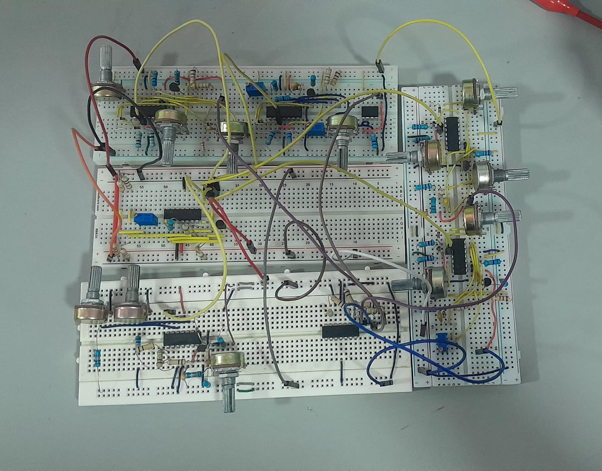
Asumí el liderazgo en el grupo para comunicar y coordinar el equipo el trabajo en la mayoría de proyectos. Definí la dirección técnica y coordiné al equipo para que cada parte encajara en el resultado final, también me encargaba de la comunicación clara y el seguimiento de los acuerdos.
Asumí el rol de Líder de Grupo y de algunos proyectos coordinando y encargándome de que se realizara la investigación y el diseño de los circuitos. Estructuré y encajé la redacción del tutorial y de la investigación sobre el sintetizador de ECG, en conjunto con las sugerencias de mis compañeros, garantizando coherencia entre la investigación y lo escrito.
Más allá del diseño, participé activamente en el montaje físico de los circuitos y en las pruebas de laboratorio. Mi rol fue asegurarme de que cada circuito entregara exactamente lo esperado — midiendo, comparando con los valores teóricos y verificando que todo funcionara correctamente antes de dar el proyecto por finalizado.
En este proyecto se realizó un libro técnico y teórico colaborativo desarrollado en LaTeX (Overleaf) que documenta aplicaciones avanazadas del amplificador operacional entre todos los grupos, validadas mediante simulación en Multisim y pruebas físicas en laboratorio. Antes de abordar las aplicaciones, el equipo caracterizó experimentalmente las limitaciones reales del Op-Amp como el ancho de banda y Slew Rate, evidenciando la brecha entre el componente ideal y el real. Cada equipo elaboró 5 aplicaciones, donde nuestro equipo elaboró las siguientes aplicaicones.
Filtro activo con arquitectura Sallen-Key pasa-altas de 2° orden sin inductores, solo con el uso de redes RC.
Circuito girador que emula el comportamiento de un inductor usando Op-Amps y componentes RC/C.
Circuito desplazador de nivel DC que reposiciona una señal AC respecto a un nivel de referencia definido.
Etapa de potencia en configuración push-pull para amplificación de audio con alta eficiencia energética.
Conversor Digital-Analógico basado en red de resistencias en escalera R-2R con Op-Amp sumador inversor.
La topología Sallen-Key permite implementar filtros activos de segundo orden (o más) prescindiendo de inductores físicos, reemplazándolos con redes RC y un amplificador operacional en configuración seguidor de voltaje. Para la configuración pasa-altas, Z₁ y Z₂ son capacitores mientras Z₃ y Z₄ son resistencias, en el caso de que se quisiera un filtro pasa-bajas se hace lo contrario con cada impedancia. Me encargué de todo el proceso: fundamentación teórica, cálculo de componentes, simulación en Multisim y montaje físico en protoboard con validación en osciloscopio RIGOL. Los resultados fueron los esperados, teniendo la frecuencia de corte esperada de 50 kHz y la ganancia esperada (Av=1).
El modelado matemático partió de la deducción analítica de la función de transferencia en el dominio complejo, permitiendo determinar con precisión los valores de componentes necesarios para alcanzar la frecuencia de corte y la respuesta en frecuencia deseadas.
Los resultados experimentales confirmaron la validez del diseño teórico, con una frecuencia de corte medida de aproximadamente 48 kHz y una ganancia cercana a 1, evidenciando un desempeño acorde a lo esperado para un filtro Sallen-Key pasa-altas de segundo orden.
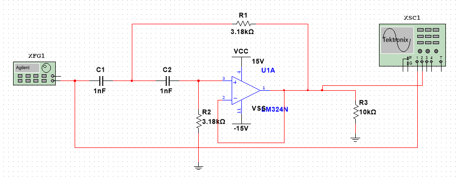
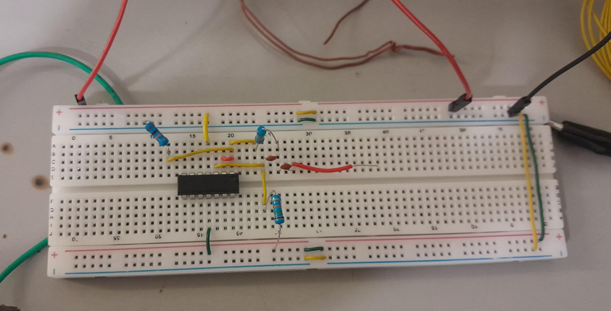
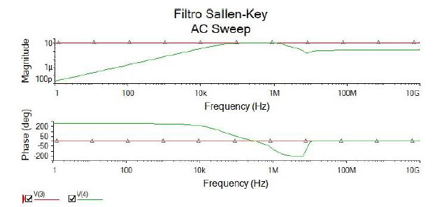
Para más información sobre el proyecto consulta la documentación completa:
📄 Ver documentación del proyectoEste proyecto consistió en el desarrollo de un MVP que solucionara una necesidad real de los laboratorios de la universidad, al ver la ausencia de instrumentación adecuada para el conteo de colonias microbianas que lo llevan haciendo de forma manual, lo cual puede introducir errores humanos y limita la reproducibilidad de los resultados. Por este motivo en equipo se decidió desarrollar un sistema analógico de barrido óptico para la detección y conteo autónomo de colonias bacterianas que funcionara con un fotodiodo que detectara la luz y mediante etapas analógicas obtener un pulso digital limpio y estable por cada colonia detectada.
Convierte corriente del fotodiodo (µA) en tensión: V_out = −I_photo · R_f.
Elimina ruido de red a 60 Hz. f_c = 20 Hz, R=10kΩ, C≈1µF.
LM358 no inversor: Av = 1 + 1MΩ/10kΩ = 101. Levanta señal sobre piso de ruido.
Resalta bordes de colonia: V_out = −RC·dV/dt. RC = 10kΩ × 1µF = 0.01 s.
Digitaliza sin rebotes. Monoestable: t_p = 1.1 × 100kΩ × 2µF = 0.22 s.
Mi participación en este proyecto se concentró en el montaje físico de etapas del circuito sobre la protoboard y en la ejecución de las pruebas de laboratorio. En la fase de construcción intervine en el ensamblaje de las etapas analógicas, lo que implicó la correcta disposición de los componentes pasivos y activos, la verificación de conexiones entre etapas y el cuidado en la polaridad y valores de cada componente. Esta labor exige una comprensión sólida del esquemático y de los niveles de señal esperados en cada nodo del circuito. Durante las pruebas, participé en la verificación del comportamiento real del sistema contrastando las señales observadas con los valores teóricos, identificando de forma práctica las limitaciones no ideales del LM358, especialmente el impacto del voltaje de offset sobre la señal amplificada y la necesidad de un ajuste milimétrico en el potenciómetro del comparador para establecer correctamente el umbral de detección.
El sistema logró extraer y digitalizar señales ópticas en un entorno ruidoso, operando desde una fuente simple de +5 V. La cadena analógica completa —desde el fotodiodo hasta el monoestable NE555— produjo pulsos digitales limpios y estables, confirmando la arquitectura de diseño. La captura en osciloscopio RIGOL evidenció la transición correcta de nivel bajo a alto ante el paso del sensor sobre una colonia, validando el funcionamiento del Schmitt Trigger y el disparo del temporizador.
Para más información sobre el proyecto consulta la documentación completa:
📄 Ver documentación del proyecto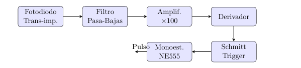
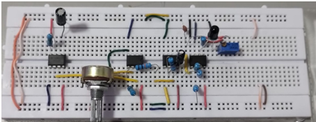
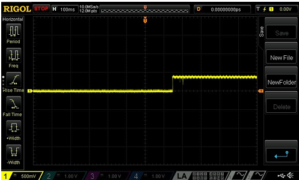
El proyecto consiste en el desarrollo de un tutorial técnico completo sobre diseño de PCB en EasyEDA, tomando como caso de estudio el filtro activo Sallen-Key. El objetivo central es documentar de forma reproducible el flujo completo que lleva un circuito desde el esquemático hasta un archivo listo para fabricación industrial, justificando cada decisión de diseño y manteniéndose por debajo de los 20 USD en costo total. Para lograrlo se trabajó con criterios DRC del fabricante JLCPCB, principios DFM aplicados desde la ubicación de componentes hasta el enrutamiento, y generación de archivos Gerber y BOM como entregables finales.
Me encargué del desarrollo del tutorial técnico, cubriendo desde la captura del esquemático en EasyEDA hasta la validación del diseño en JLCPCB. Seleccioné componentes de la biblioteca LCSC con encapsulados THT estándar, definí las dimensiones de la tarjeta en 50 × 40 mm y apliqué criterios DFM en la distribución física y el enrutamiento. Configuré anchos de pista de 10 mils para señal y 20 mils para alimentación, apliqué planos de masa en ambas caras y ejecuté la verificación DRC obteniendo 0 errores. Como resultado, el diseño quedó listo para fabricación con un costo total de aproximadamente $4 USD por 5 placas, cumpliendo el requerimiento de mantenerse por debajo de los 20 USD.
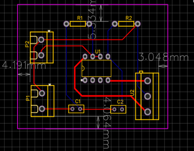
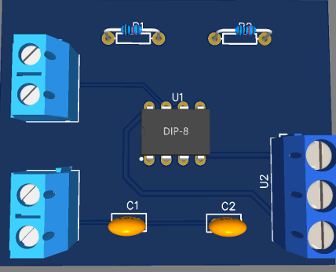
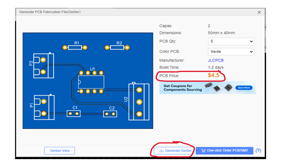
Para más información sobre el proyecto consulta la documentación completa:
📄 Ver documentación del proyectoEl proyecto tiene como propósito definir la base conceptual y operativa para el desarrollo de un sintetizador analógico de señal ECG capaz de representar condiciones cardíacas normales y al menos tres anomalías. El trabajo se centra en comprender el ECG como una señal compuesta por subondas P, Q, R, S y T con características específicas de amplitud, duración y posición temporal, y en traducir esa comprensión a un modelo funcional realizable desde la electrónica analógica. El resultado es un documento que establece con claridad qué se va a construir y cómo se entiende el problema, de modo que la fase de implementación pueda desarrollarse sin ambigüedades.
Mi participación se concentró en la selección y descripción técnica de las anomalías cardíacas del sistema. Para cada anomalía identifiqué qué parámetro de la señal se ve afectado —ya sea el período del ciclo, la amplitud de una subonda, su posición temporal o su ancho— y traduje ese cambio fisiológico a términos concretos del modelo de síntesis gaussiano, definiendo cómo debería ajustarse cada parámetro en el sintetizador para representar correctamente la condición. Las tres anomalías seleccionadas fueron taquicardia sinusal, fibrilación auricular y bloqueo auriculoventricular de primer grado.
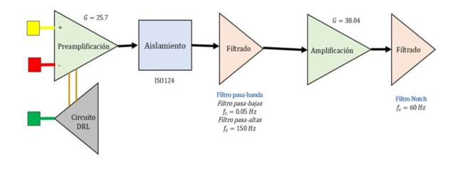
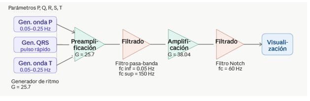
Para más información sobre el proyecto consulta la documentación completa:
📄 Ver documentación del proyectoEste proyecto materializa el modelo conceptual del Proyecto 4 mediante el diseño, implementación y validación de un prototipo funcional de sintetizador analógico de señal ECG calibrado a 60 BPM. El sistema fue construido empleando estrictamente topologías de electrónica analógica —sin microcontroladores ni sistemas digitales embebidos— y es capaz de representar condiciones normales y tres anomalías cardíacas en tiempo real: Fibrilación Auricular, Hipertrofia Ventricular e Isquemia Miocárdica.
Mi participación se centró en dos frentes: el montaje físico de las subondas del sintetizador y el proceso de fabricación de la PCB. En el montaje, implementé y verifiqué el comportamiento individual de cada subonda (P, Q, R, S, T) en protoboard, asegurando que las formas de onda generadas cumplieran con los parámetros morfológicos esperados antes de la integración final. En la parte de fabricación, participé en el diseño del esquemático en EasyEDA, la transición del esquemático a PCB, la verificación DRC y la preparación de los archivos para fabricación con JLCPCB, incluyendo la generación del BOM y los archivos Gerber.
El sistema se estructuró de forma modular secuencial con cinco bloques principales. Un generador de rampa cíclica actúa como reloj maestro alcanzando 10 V en exactamente 1 segundo (60 BPM), reseteándose mediante un MOSFET 2N7000 disparado por un comparador Schmitt. La rampa se inyecta en un banco de comparadores de ventana que activan cada subonda en su rango temporal correspondiente. Las ondas P y T se modelan con filtros Sallen-Key Bessel-Thompson (Q ≈ 0.55, C₁/C₂ = 1.21) y las ondas Q, R, S con integradores limitados (clamped integrators). Todas las subondas convergen en un sumador inversor con ganancia unitaria (Rf = Rin = 100 kΩ), seguido de un inversor para normalizar la polaridad de salida.
El diseño esquemático se realizó en EasyEDA siguiendo un orden modular legible por etapas: comparador de ventana, subondas P, Q, R, S, T, control de anomalías y etapa de suma. Debido a la alta densidad de conexiones (108 componentes, 66 nets), se optó por una PCB de 6 capas con dimensiones de 181.09 × 100.08 mm. El diseño pasó verificación DRC automática con 0 errores y cumple criterios DFM incluyendo serigrafía, orificios y acabado superficial. El costo estimado de fabricación con JLCPCB es de $62.20 USD para un lote de 5 unidades.
El sintetizador ECG pasó por tres fases de materialización: primero el montaje experimental en protoboard para validar cada subonda por separado, luego la captura de la señal completa en el osciloscopio RIGOL como evidencia del funcionamiento real, y finalmente el diseño del PCB en EasyEDA con vista 3D previa a la fabricación industrial.
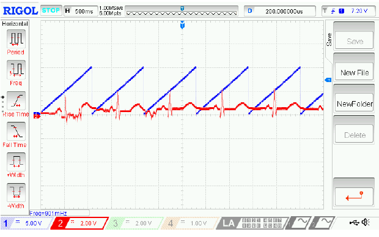
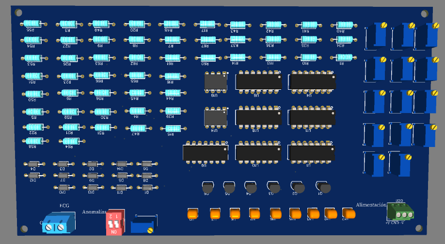
Para más información sobre el proyecto consulta la documentación completa:
📄 Documentación técnica 📄 Diseño para fabricaciónProyecto final del curso cuyo propósito es integrar, sintetizar y comunicar de manera rigurosa y atractiva el proceso completo desarrollado a lo largo del semestre. El póster articula los cinco proyectos en una narrativa técnica coherente que evidencia la evolución desde la identificación del problema hasta la validación experimental y la proyección a fabricación, bajo el título "Ingeniería Analógica Aplicada: Fases de Desarrollo Iterativo para la Creación de Hardware".
Mi participación se centró en la redacción del contenido técnico del póster, apoyando la síntesis y comunicación clara de los resultados de los proyectos. Esto incluyó estructurar la narrativa de cada sección, asegurar coherencia entre los bloques de contenido y adaptar el lenguaje técnico a un formato divulgativo comprensible para un observador externo.
Marco general del curso y justificación del trabajo desarrollado como proceso de ingeniería iterativo.
Resumen integrado de cada proyecto, mostrando la evolución desde el problema hasta la validación experimental.
Evidencia experimental del prototipo, mediciones reales en osciloscopio y comparación con el comportamiento esperado.
Análisis crítico del proceso, aprendizajes del equipo, mejoras propuestas y potencial de escalabilidad del sistema.
El póster integró el Engineering Design Process como marco metodológico del proyecto, evidenciando la trazabilidad desde la identificación del problema hasta la optimización del diseño. La sección colaborativa documentó el estudio conjunto de las cinco aplicaciones de Op-Amps, sus aspectos teóricos y las limitaciones no ideales encontradas experimentalmente. El póster completo podrás verlo hundiendo al botón que hay al final de la página.
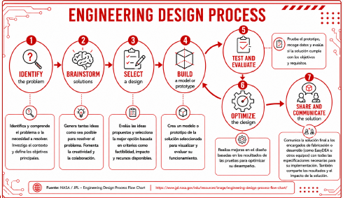
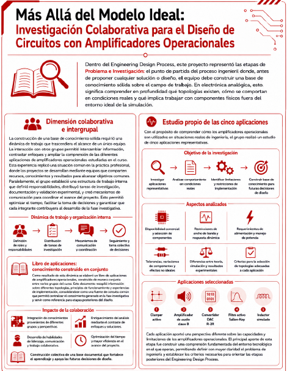
Para más información sobre el proyecto consulta la documentación completa:
📄 Ver póster completoSi quieres conocer los detalles técnicos de las simulaciones, las derivaciones matemáticas o discutir sobre proyectos de electrónica analógica, no dudes en escribir.